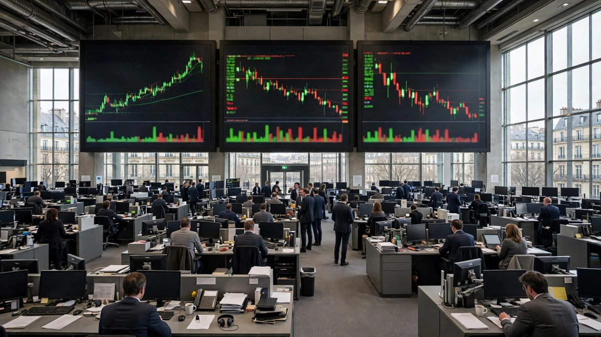

यूरोप ऊंचा खुला, एशिया संभला, अमेरिकी फ्यूचर्स मामूली बढ़े
STOXX 600 0.3 प्रतिशत बढ़कर 641.75 पर पहुंचा, निक्केई 1.39 प्रतिशत और कोस्पी 2.05 प्रतिशत बढ़कर बंद हुए, जबकि बजट में कर बढ़ने की रिपोर्ट पर ब्रिटेन के बैंक शेयर गिरे।

मुख्य बिंदु
- यूरोपीय शेयर शुक्रवार, 16 अक्टूबर को ऊंचे खुले और एशियाई बाजार बढ़कर बंद हुए। तकनीकी शेयरों में तेज गिरावट के एक हफ्ते के बाद शांति लौटी। पैन यूरोपीय STOXX 600 07:08 GMT पर 0.3 प्रतिशत बढ़कर…
- अमेरिकी शेयर फ्यूचर्स ने न्यूयॉर्क में स्थिर शुरुआत का संकेत दिया। सुबह 4:45 ET पर S and P 500 फ्यूचर्स 0.21 प्रतिशत, Nasdaq 100 फ्यूचर्स 0.13 प्रतिशत, Dow फ्यूचर्स 0.32 प्रतिशत और Russell 2000…
- जापान का निक्केई 225 1.39 प्रतिशत बढ़कर 65,324.24 पर बंद हुआ और दक्षिण कोरिया का कोस्पी 2.05 प्रतिशत बढ़कर 5,668.06 पर बंद हुआ। हांगकांग का हैंग सेंग 0.34 प्रतिशत, ताइवान का टाइएक्स 0.30 प्रतिशत…
यूरोपीय शेयर शुक्रवार, 16 अक्टूबर को ऊंचे खुले और एशियाई बाजार बढ़कर बंद हुए। तकनीकी शेयरों में तेज गिरावट के एक हफ्ते के बाद शांति लौटी। पैन यूरोपीय STOXX 600 07:08 GMT पर 0.3 प्रतिशत बढ़कर 641.75 अंक पर पहुंचा, जो दो हफ्ते से अधिक समय का सबसे ऊंचा स्तर के करीब है, रॉयटर्स ने बताया। सूचकांक हफ्ते में 1 प्रतिशत से अधिक ऊपर था और अगस्त के बाद की सबसे बड़ी साप्ताहिक बढ़त की ओर था।
अमेरिकी शेयर फ्यूचर्स ने न्यूयॉर्क में स्थिर शुरुआत का संकेत दिया। सुबह 4:45 ET पर S and P 500 फ्यूचर्स 0.21 प्रतिशत, Nasdaq 100 फ्यूचर्स 0.13 प्रतिशत, Dow फ्यूचर्स 0.32 प्रतिशत और Russell 2000 फ्यूचर्स 0.40 प्रतिशत ऊपर थे। VIX अस्थिरता सूचकांक 2.61 प्रतिशत गिरकर 16.03 पर आ गया।
गिरावट के बाद एशिया बढ़कर बंद
जापान का निक्केई 225 1.39 प्रतिशत बढ़कर 65,324.24 पर बंद हुआ और दक्षिण कोरिया का कोस्पी 2.05 प्रतिशत बढ़कर 5,668.06 पर बंद हुआ। हांगकांग का हैंग सेंग 0.34 प्रतिशत, ताइवान का टाइएक्स 0.30 प्रतिशत और मुख्य भूमि चीन का SSE कंपोजिट 0.15 प्रतिशत बढ़ा। इन बढ़तों ने गुरुवार के भारी नुकसान का कुछ हिस्सा वापस किया, जब निक्केई 4.9 प्रतिशत गिरा था और कोस्पी करीब 8 प्रतिशत टूटा था, क्योंकि निवेशकों ने AI विस्तार के पीछे के कर्ज की चिंता में चिप शेयर बेचे थे।
रात भर वॉल स्ट्रीट ने रुख तय किया। गुरुवार, 15 अक्टूबर को Dow Jones Industrial Average 1.08 प्रतिशत, S and P 500 0.33 प्रतिशत और Nasdaq Composite 0.08 प्रतिशत बढ़ा, दिन के भीतर की 1.8 प्रतिशत गिरावट से उबरकर। MSCI के यह कहने के बाद कि वह इंडोनेशिया को उभरते बाजार के दर्जे से हटाने पर परामर्श कर रहा है, इंडोनेशिया चर्चा में रहा, यह कहानी द ऑर्बिट पोस्ट गुरुवार को विस्तार से छाप चुका है।
यूरोप की शुरुआत: औद्योगिक आगे, ब्रिटेन के बैंक पीछे
जर्मनी का DAX शुरुआत में 0.5 प्रतिशत बढ़ा। Siemens Energy 1.9 प्रतिशत और रक्षा समूह Rheinmetall 2.4 प्रतिशत बढ़े। नीदरलैंड का AEX 0.4 प्रतिशत बढ़ा, ASML 1.8 प्रतिशत ऊपर रहा, और चिप उपकरण बनाने वाली Aixtron तीसरी तिमाही के ऑर्डर अनुमान को पछाड़ने और सालाना मार्गदर्शन की पुष्टि के बाद 4.8 प्रतिशत उछली। इटली का FTSE MIB 0.4 प्रतिशत और स्पेन का IBEX 35 0.3 प्रतिशत बढ़ा। फ्रांस का CAC 40 लग्जरी शेयरों के दबाव में 0.1 प्रतिशत फिसला।
लंदन का FTSE 100 बैंकों के दबाव में 0.3 प्रतिशत गिरा। गुरुवार देर रात द गार्डियन की रिपोर्ट के बाद कि वित्त मंत्री जॉन हीली 28 अक्टूबर के बजट में बैंकों पर कर बढ़ाने की तैयारी में हैं, Lloyds 2.2 प्रतिशत और NatWest 1.9 प्रतिशत गिरे। चर्चा में एक विकल्प पिछले सरकार द्वारा बैंक अधिभार में की गई कटौती को वापस लेना है, जिससे साल में 2 अरब पाउंड से अधिक जुटेगा। ब्रिटेन के वित्त मंत्रालय ने रिपोर्ट पर टिप्पणी से इनकार किया। Barclays 0.2 प्रतिशत मामूली गिरा।
श्नाइडर ने दूसरी बार लक्ष्य बढ़ाया
AI डेटा सेंटर बना रही क्लाउड कंपनियों की मांग से ऑर्डर मजबूत रहने पर श्नाइडर इलेक्ट्रिक ने 2026 के मुनाफे और राजस्व लक्ष्य इस साल दूसरी बार बढ़ाए। फ्रांसीसी समूह को अब उम्मीद है कि समायोजित मूल मुनाफा 2026 में जैविक रूप से 18 से 21 प्रतिशत बढ़ेगा, पहले यह 14 से 19 प्रतिशत था, और राजस्व 12 से 14 प्रतिशत बढ़ेगा, पहले यह 10 से 13 प्रतिशत था। तीसरी तिमाही का राजस्व जैविक रूप से 16.9 प्रतिशत बढ़कर 11.46 अरब यूरो रहा, विश्लेषकों के अपेक्षित 11.13 अरब यूरो से ऊपर। औद्योगिक शेयर शुरुआती कारोबार में 0.7 प्रतिशत बढ़े और STOXX 600 में सबसे अधिक बढ़ने वालों में रहे। श्नाइडर के नतीजे द ऑर्बिट पोस्ट अलग कहानी में विस्तार से दे रहा है।
वार्श ने बाजारों को डराने जैसा कुछ नहीं कहा
बैंकॉक में IMF और विश्व बैंक की सालाना बैठकों में बोलते हुए फेडरल रिजर्व अध्यक्ष केविन वार्श ने फेड के अगले कदम का कोई संकेत नहीं दिया और कहा कि वह बैठकों का पहले से अनुमान नहीं लगाते, इसके बाद ट्रेजरी प्रतिफल स्थिर रहे। मॉर्निंगस्टार ने बताया कि कड़े रुख की कमी को बाजारों ने अच्छी खबर माना। रॉयटर्स ने बताया कि व्यापारी अब उम्मीद करते हैं कि फेड अगली दर बढ़ोतरी के लिए दिसंबर तक इंतजार करेगा, भले ही इस हफ्ते दो मुद्रास्फीति रिपोर्ट उम्मीद से अधिक गर्म आईं। AI शेयर खुलने से पहले के कारोबार में कमजोर रहे, CoreWeave 2.5 प्रतिशत नीचे रहा।
तेल, सोना और आगे क्या
ब्रेंट कच्चा तेल करीब 0.3 प्रतिशत फिसला, लेकिन 105 डॉलर प्रति बैरल से ऊपर बना रहा, क्योंकि व्यापारी अंतरराष्ट्रीय ऊर्जा एजेंसी की करीब 10 करोड़ बैरल भंडार तेजी से निकालने की योजना को तौल रहे थे। WTI कच्चा तेल 1.14 प्रतिशत गिरकर 95.40 डॉलर पर कारोबार हुआ। सोना 0.87 प्रतिशत बढ़कर 4,206 डॉलर प्रति औंस और बिटकॉइन 1.09 प्रतिशत बढ़कर 82,161 डॉलर पर पहुंचा। 10 साल का ट्रेजरी प्रतिफल 5.09 प्रतिशत के करीब रहा।
यूरोप के निवेशक शुक्रवार को बाद में आने वाले सितंबर के यूरोजोन मुद्रास्फीति के अंतिम आंकड़ों पर नजर रखेंगे, ताकि पता चले कि महंगे तेल से बना दबाव घट रहा है या नहीं। शुरुआती अनुमान में मुद्रास्फीति 3.8 प्रतिशत रखी गई थी। यूरोपीय केंद्रीय बैंक 29 अक्टूबर को दरों पर फैसला करेगा, फेडरल रिजर्व के एक दिन बाद।
स्रोत
इस कहानी में जुड़े रॉयटर्स, द वॉल स्ट्रीट जर्नल, शेयरकास्ट, मॉर्निंगस्टार और बाजार डेटा रिपोर्ट।
टाइमलाइन
- Oct 15, 2026एशिया में AI शेयरों की भारी बिकवाली के बाद वॉल स्ट्रीट बढ़कर बंद हुआ, Dow 1.08 प्रतिशत ऊपर रहा।
- Oct 15, 2026द गार्डियन ने बताया कि वित्त मंत्री जॉन हीली 28 अक्टूबर के बजट में ब्रिटेन के बैंकों पर कर बढ़ाने की तैयारी में हैं।
- Oct 16, 2026एशिया बढ़कर बंद हुआ, यूरोप ऊंचा खुला, और श्नाइडर इलेक्ट्रिक ने 2026 के लक्ष्य दूसरी बार बढ़ाए।
स्रोत
- Reuters: European stocks gain as Schneider lifts sentiment; inflation data awaited
- The Wall Street Journal: UK bank shares slip after report of tax increase plan; European stocks largely rise
- Sharecast: Europe open, shares up as bond yields fall; UK bank stocks hit by tax talk
- Morningstar: Stocks futures, Treasurys steady as markets take breather
- Reuters: Most Asian stocks rise as calm returns after CoreWeave shock
- Reuters: Fed's Warsh sees US economic tailwinds, mum on rate-path view
- Reuters: UK banking stocks dip on media report of budget tax increase
- Regards of Wall Street: Stock market futures today, October 16 premarket snapshot
- ScanX: Trade setup for October 16, 2026, global indices table